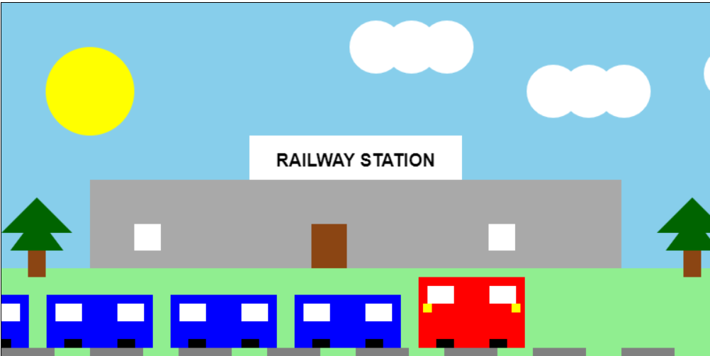
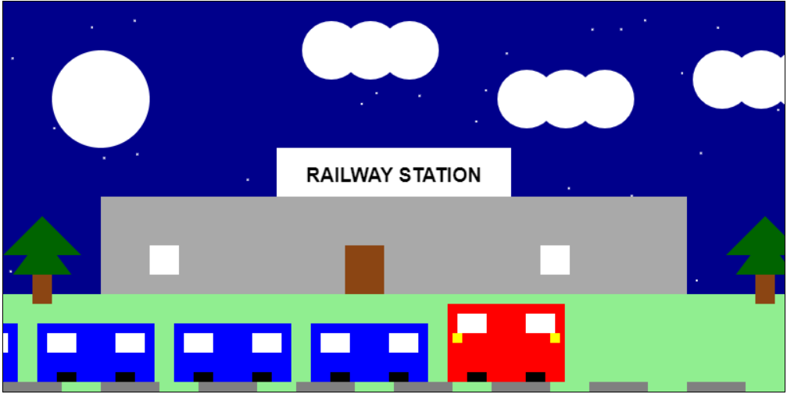

Interactive Animated Graphic Sequence Documentation
Candidate Details
Roll Number: 102103449, 102103436
Name: Aaryan Duggal, Jaideep Singh
Description
The "Interactive Animated Graphic Sequence" project is a captivating endeavor that seamlessly integrates HTML, CSS, and JavaScript to craft an engaging visual experience. At its core, this project centers around a dynamic animation featuring a train traversing horizontally across the screen, ingeniously punctuated by a transition between day and night modes. The animation isn't merely an aesthetic spectacle; it serves as a symbolic representation of the passage of time, lending a deeper narrative layer to the viewer's experience. As the train completes each cycle, the seamless shift from day to night, and vice versa, underscores the project's thematic exploration of temporal progression. This transition is executed with finesse, evoking a sense of fluidity and continuity akin to the natural rhythm of day and night cycles. Through meticulous attention to detail and a mastery of animation techniques, the project achieves a harmonious synthesis of form and function, captivating the audience with its immersive and visually striking presentation. With its seamless integration of interactive elements and captivating storytelling, the "Interactive Animated Graphic Sequence" project stands as a testament to the power of digital creativity and innovation in web development.
Screenshots
Day Mode
Night Mode
Teaser

Files Included
- index.html: The index.html file forms the structural foundation of the webpage, defining the layout and arrangement of various elements. It includes the canvas element where the animated graphic sequence is displayed, along with links to the necessary JavaScript files (background.js and experiment.js). Furthermore, index.html provides a platform for incorporating additional content, such as candidate details, project descriptions, and interactive elements. By organizing and structuring the webpage's components, index.html ensures seamless integration and optimal presentation of the animated graphic sequence to the audience.
- background.js: The background.js file serves as the backbone for creating the immersive visual backdrop of the webpage. It defines functions for drawing the sky, celestial objects, clouds, ground, railway station building, trees, and other elements that contribute to the atmospheric ambiance of the animation. Additionally, it handles the transition between day and night modes, dynamically altering the background color and celestial objects to reflect the changing time of day. Through meticulous attention to detail and creative implementation of canvas drawing techniques, background.js plays a pivotal role in setting the stage for the animated graphic sequence.
- experiment.js: The experiment.js file encapsulates the experiment class, serving as a central hub for managing candidate details and orchestrating main function calls. Within this file, candidate information, including roll numbers and names, is stored and displayed on the webpage. Additionally, experiment.js coordinates the initialization and execution of essential functions responsible for animating the graphic sequence, toggling between day and night modes, and handling user interactions. By encapsulating these functionalities within the experiment class, experiment.js promotes modularity, code organization, and maintainability, ensuring the smooth operation of the interactive animated graphic sequence.